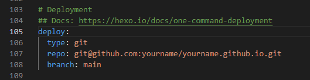
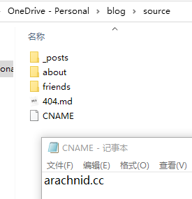

# 前言
欢迎访问 “ Arachnid's blog ”：https://arachnid.cc
本系列专属于记录个人博客搭建过程，使用 Hexo 框架 + shoka 主题 + Github pages 服务；你说有啥好？那就是：gayhub 不倒博客继续跑。
目前功能效果：分类、标签、评论、搜索、背景音乐、赞赏、字数统计、阅读量统计、随机图库、社交外链、页面特效等等。
# 准备工作
此处开始之前，默认你已经实现了以下操作：
- 拥有一个 Github 账号，没有的话去注册一个；
- 安装了 Node.js （注意 Hexo 版本限制），并了解相关 npm 的基础知识；
- 安装了 git（或者其它终端），以下默认你的终端服务为 git 。
然后其他的 git 绑定 Github、生成 ssh 这些操作也默认你准备完成了，实在不懂就网上搜一下吧。
# 网站建立
# 本地建站
1、安装 Hexo
打开 git 终端，输入安装命令并回车：
npm install -g hexo-cli |
然后拓展一下 npm 常规命令：
npm ls -dept 0 #查看已安装插件 | |
npm install Plugin_name --save #安装名为 Plugin_name 的插件 | |
npm uninstall Plugin_name #卸载名为 Plugin_name 的插件 | |
npm outdated #检查插件更新 |
2、建立本地存储
创建并打开你需要存放 blog 网站代码的文件夹，例如 “blog_dir” ：
mkdir "blog_dir"
cd "blog_dir"
初始化 Hexo，输入命令并回车：
hexo init |
然后启动本地服务查看，此处为动态访问，非静态网页：
hexo s |
最后根据输出提示，浏览器打开链接 http://localhost:4000/，你将会访问到 Hello World；至此，你已经完成本地博客搭建了，请为自己欢呼 "tada"
note： 可能有些在启动本地服务查看时会出现端口被占用的情况，那么可以通过更改端口来实现访问，具体命令看下一点。
3、hexo 常用命令
hexo new "postName" #新建文章 | |
hexo new page "pageName" #新建页面 | |
hexo new draft "draftName" #新建草稿 | |
hexo generate #生成静态页面至 public 目录 | |
hexo server #本地动态访问页面（默认端口 4000，'ctrl + c' 关闭 server） | |
hexo deploy #部署到服务器 | |
hexo clean #删除缓存文件及静态文件 | |
hexo help #查看帮助 | |
hexo version #查看 Hexo 的版本 |
更多操作可查看：Hexo 指令
关于有用的指令缩写：
hexo cl == hexo clean | |
hexo n == hexo new | |
hexo g == hexo generate | |
hexo s == hexo server | |
hexo d == hexo deploy | |
hexo s -p "new_port" #更改访问端口并启动访问服务 | |
hexo s -s #调用静态页面进行本地访问，确保调用过 `hexo g` 命令 | |
hexo d -g #预先生成静态文件并部署到服务器 | |
hexo cl && hexo d -g #清缓存、重构静态页面、部署 --- 俗称 "一键三连" |
# 云端部署 --- 基于 Github pages
1、创建仓库
前往 GitHub 并创建一个名为 username .github.io 的公共存储库，其中 username 是您在 GitHub 上的用户名（注意必须要对应上，否则无法使用）
2、关联服务器地址
打开你的 “blog_dir” 文件夹，在根目录下找到 _config.yml 文件对其进行以下修改：

repo 为上面创建的仓库地址， branch 填写主分支（新的是 main ，以前旧的是 master ）
安装关联插件：
npm install hexo-deployer-git --save |
其他的就不多作解释了，详细可看：Hexo 一站式部署
3、一键三连
执行：
hexo cl && hexo d -g |
# 域名绑定（可选）
1、注册购买域名
一般的话，国内比较好的就 阿里云或者 腾讯云，国外就 NameSilo 和 Dynadot，当然，除了这些还有很多域名购买网站；然而，最好就是找那些比较大型稳定的网站购买；除此之外，你也可以到 https://www.nazhumi.com/ 中查看在哪里购买会性价比更高一些。
2、域名解析
对于不同的购买网站，其操作不同，这里用的是 NameSilo：

进入域名管理，然后在你想要设置的域名中，配置 DNS 解析。

在 DNS 设置部分，你可以删除自带的记录，再重新添加；又或者直接编辑原有的记录，不过要对应上类型，一般只需要 C 和 CNAME 这两个类型就足够了。
3、绑定域名到 Hexo 博客
进入本地博客文件夹的 source 目录，打开记事本，里面输入自己的域名，如 http://www.example.com，保存名称为 “CNAME”。如我的是：

记住，直接是 “CNAME” 文件，是不带后缀的。
4、开启 HTTPS 服务
在完成上一步域名文件创建后，通过 “一键三连” 重新部署网站，然后来到 GitHub 博客仓库里进行打开：

HTTPS 证书部署成功需要一定时间，等大概几分钟再访问域名，就可以看到域名前面的小绿锁了，至此 HTTPS 配置完成！
# 主题修改
hexo 目前收录了三百多个主题，你可以对他们进行一直修改，这些都是可以的，当然，如果你也可以自己创作一个专属于你自己的主题。以下皆以 shoka 主题进行解说。
# 应用主题
# 安装主题文件
拉取 Shoka 主题到 themes/shoka 目录，在 Hexo 根目录（即你的 blog 根目录，后面全部统称 <root> ）执行下面的命令：
git clone https://github.com/amehime/hexo-theme-shoka.git ./themes/shoka |
# 更换主题模式
修改配置文件，更改主题模式为 shoka ；在 <root>/_config.yml 文件中找到 theme ，做如下更改：
theme: shoka |
# 修改主题配置
主题配置的所有参数在 <root>/themes/shoka/_config.yml 文件中。
为了避免以后主题版本升级或者提交出现配置合并或冲突，建议复制主题目录下的 _config.yml 到 Hexo 根目录，并命名为 _config.shoka.yml ，也就是说，所有主题的自定义配置均保存于 <root>/_config.shoka.yml 文件。现在，您可以删除 shoka 主题目录下的 _config.yml 文件，或将它重命名为 _config.yml.template 。
然后，里面的配置信息，这里就不阐述了，直接看 shoka 主题的博主姐姐的文章吧：
主题的基础配置可以参考这里
界面显示相关的配置参考这里
# 插件依赖
根据 shoka 主题的博主姐姐写的文章 ，净化的 shoka 主题必须安装以下两个插件：
| 插件名称 | npm 地址 | 功能 |
|---|---|---|
| hexo-renderer-multi-markdown-it | 链接 | md 文件渲染器，压缩 css/js/html |
| hexo-autoprefixer | 链接 | 给生成的 css 文件们添加浏览器前缀 |
然后安装完以上插件后，修改站点配置文件 <root>/_config.yml ，加入相关配置。
# multi-markdown-it 安装与配置
# 安装
安装前，记得务必卸载掉默认的
hexo-renderer-marked，以及别的 markdown 文件渲染器。npm un hexo-renderer-marked --save
# 或者yarn remove hexo-renderer-marked安装插件
npm i hexo-renderer-multi-markdown-it --save
# 或者yarn add hexo-renderer-multi-markdown-it
# 配置
加入
markdown配置，用来渲染 md 文件markdown:
render: # 渲染器设置
html: false # 过滤 HTML 标签
xhtmlOut: true # 使用 '/' 来闭合单标签 （比如 <br />）。
breaks: true # 转换段落里的 '\n' 到 <br>。
linkify: true # 将类似 URL 的文本自动转换为链接。
typographer:
quotes: '“”‘’'
plugins: # markdown-it 插件设置
- plugin:
name: markdown-it-toc-and-anchor
enable: true
options: # 文章目录以及锚点应用的 class 名称，shoka 主题必须设置成这样
tocClassName: 'toc'
anchorClassName: 'anchor'
- plugin:
name: markdown-it-multimd-table
enable: true
options:
multiline: true
rowspan: true
headerless: true
- plugin:
name: ./markdown-it-furigana
enable: true
options:
fallbackParens: "()"
- plugin:
name: ./markdown-it-spoiler
enable: true
options:
title: "你知道得太多了"
加入
minify配置，压缩 css/js/htmlminify:
html:
enable: true
exclude: # 排除 hexo-feed 用到的模板文件
- '**/json.ejs'
- '**/atom.ejs'
- '**/rss.ejs'
css:
enable: true
exclude:
- '**/*.min.css'
js:
enable: true
mangle:
toplevel: true
output:
compress:
exclude:
- '**/*.min.js'
停用默认代码高亮功能，否则代码块的 mac 样式不能正常显示。
在
<root>/_config.yml中找到highlight和prismjs，把enable改成false。highlight:
enable: false
prismjs:
enable: false
# autoprefixer 安装与配置
# 安装
npm i hexo-autoprefixer --save | |
# 或者 | |
yarn add hexo-autoprefixer |
# 配置
autoprefixer: | |
exclude: | |
- '*.min.css' |
# 站点基本配置
# 设置站点资料
在 <root>/_config.yml 中的 # Site 栏目可以配置属于自己信息：
| 参数 | 描述 |
|---|---|
| title | 网站标题 |
| subtitle | 网站副标题 |
| description | 网站描述 |
| keywords | 网站关键词，搜索引擎会搜索这些关键词 |
| author | 博主名字 |
| language | 网站语言，默认为英语 en，中文为 zh-CN |
| timezone | 网站使用时区，默认使用访问电脑所在时区也可以指定比如使用上海时区 Asia/Shanghai 。建议使用默认就行了 |
# 配置 About 页面
在 Hexo 根目录下执行：
hexo new page "about" |
在 <root>/source/about/index.md 文件中添加下面的字段：
--- | |
title: 自我介绍标题 | |
layout: about | |
--- | |
自我介绍正文 |
其中 Front-matter 的 layout: about 字段为必要的且不可修改为其它值；Front-matter 的 title 和正文内容由您自定义编写。
# 配置 404 页面
一般来说，hexo 的 404 页面配置是通过如下来设置的：
在 Hexo 根目录下 source 中创建 404.md 文件，添加字段如下：
--- | |
layout: 404 | |
title: "[404]" | |
description: "May the Force be with you :)" | |
--- |
其中 Front-matter 的 layout: 404 字段为必要的且不可修改为其它值， title 字段为您自定义的标题， description 字段为 404 页面的自定义描述。
但是，在 shoka 主题上，主题作者是写死了 404 页面的，因此只能做一些简单的修改，当然，你也可以魔改：
显示图片：
在
<root>\themes\shoka\source\images中找到404.png，用你喜欢的图片替换即可，如果是其它格式的，在 ``<root>\themes\shoka\source\css_common\components\pages\pages.styl搜索404.png` 替换即可；需要注意的是，
links链接块中站点图片默认设为./*/images/404.png。标题文字：
在 ``<root>themes\shoka\languages
文件夹中，找到你当前设置的语言文件，对not_found` 字段进行更改 。